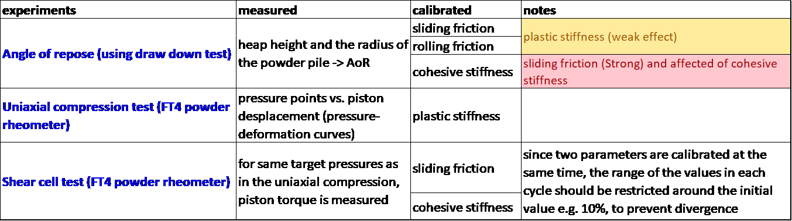
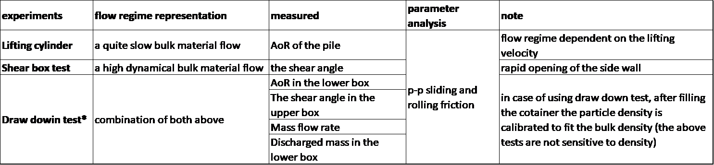
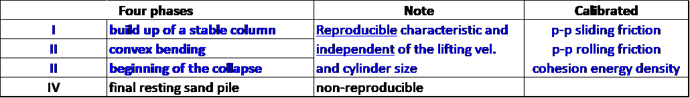
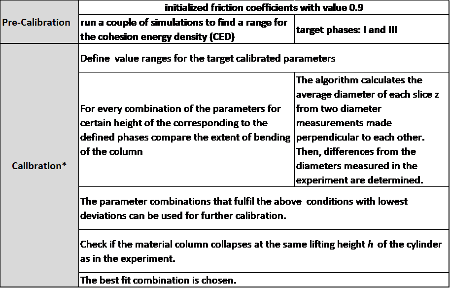
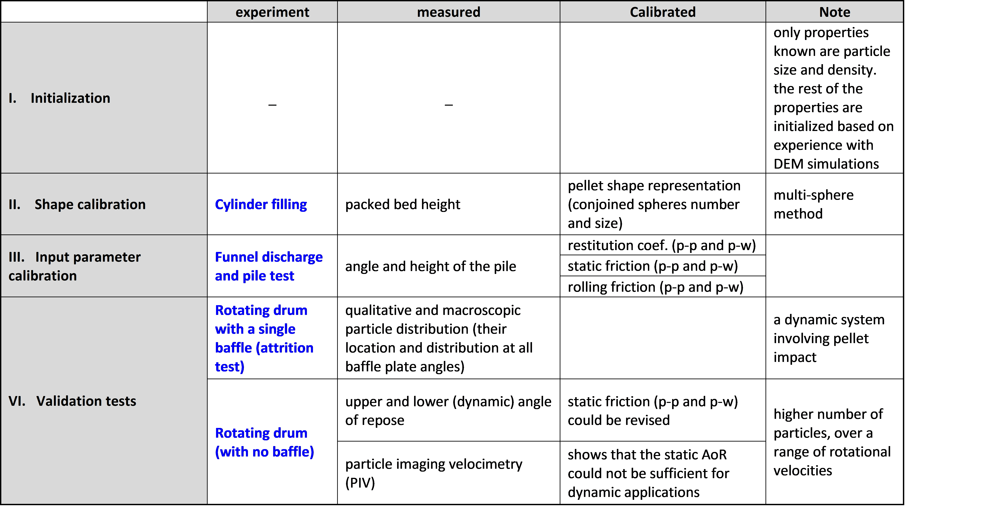

Calibration strategy Selection (Meta-task)
Contents
4. Calibration strategy Selection (Meta-task)#
4.1. Use-case description#
Sub-System: -
This use case describes how to decide on the required experiment(s)/template(s) that should be used for the specific application that the DEM-parameter calibration is performed for. the calibration tests should consider the nature of the real process which should be simulated and therefore the calibration process should be selected accordingly. The target flow situation (e.g. quasi-static, slow, high dynamical bulk material flow), material characteristics (extent of deformability, plasticity, cohesiveness, …), and the suitable contact model and its required parameters should be taken into account. Since multiple combination of parameters can produce the target bulk response in every experiment, it is highly recommended to use either more than one experiment or to aim for more than one target measured response.
Section |
Comment |
|---|---|
Use Case Name |
Deciding on the calibration strategy |
Scope |
Choosing the right calibration workflow |
Level |
Top-Level calibration strategy |
Primary Actor |
Researchers who wants to calibrate a DEM model, or have previous experience and deep knowledge in particle technology and DEM simulations |
Stakeholders and Interests |
Researchers who perform DEM simulations or develop DEM models, experimentalists who conduct tests for calibration of DEM models |
Preconditions |
Deep knowledge about the sensitivity of common experiments to the input DEM parameters, contact models in DEM simulations, |
Success Guarantee |
Accessing and committing data to the database is completed without error. Data is available in the database and the calibration workflows and optimum order of performing the experiments in calibration workflows. |
Main Success Scenario |
The suitable workflow is selected and the prerequisites for preforming such workflow within the workflow environment is available. |
Extensions |
- |
Special Requirements |
The experimental devices (data), relational data, and corresponding calibration templates should be available. |
Technology and Data Variations List |
- |
Frequency of Occurrence |
Before performing any calibration case |
Miscellaneous |
- |
4.2. Workflow#
Based on the above-described criteria (the application and desired flow situation, contact model, particle property, etc. ), the user should choose suitable experiments and calibration templates in the calibration tool to be used (e.g., Aspherix Calibration). Despite numerous studies and proposed workflows for the calibration of DEM parameters have been published, there is no universal strategy for the calibration of DEM parameters. Thus, the users should be careful when defining the actual calibration calculations, making sure that the set of calibrated parameters reflects the real-world material as good as possible. This is since multiple combination of parameters can lead to the same bulk response.
Below we provide calibration strategies for different types of materials that have been suggested in literature:
4.2.1. Dependence of Micro-Macro properties for cohesionless bulk material under rapid flow conditions (>0.1 m/s) and low consolidation (<100 kPa)#
Reference : Katterfeld et al. (2019)
A workflow for the calibration of cohesionless bulk material under the above application conditions has been introduced by Katterfeld et al. They have also demonstrated the extent of the influence of DEM micro properties (e.g. contact stiffness, sliding/rolling frictions, particle shape, density etc.) on the measured Bulk properties (macro properties) and have listed the sensitive experiments to the the specific bulk material properties.
4.2.2. Automatized calibration workflow for DEM models of Cohesive powders exhibiting bulk volume loss of up to 25% (after uniaxial consolidation up to 10 kPa)#
Reference: Orefice and Khinast (2019)
Orefice and Khinast have introduced a workflow for calibration of cohesive powders. The contact model that they have used is the adhesive elasto-plastic model and in the table below, the employed experiments have been shown:

with their workflow the sliding and rolling friction as well as the cohesive and plastic stiffness of particles can be calibrated.
4.2.3. A standard procedure to calibrate friction coefficients in DEM Simulation of cohesionless bulk material#
Ref.: Roessler et al. (2019)
Roessler et al. have defined an effective method to calibrate the friction coefficients of cohesionless bulk material in DEM. in the bellowed table you can see sensitive experiments that have been utilized for the calibration based on the flow regime of the particulate system.

***** this modified draw down test is enough on its own to give a unique set of parameters
A large number of simulations are carried out, for each range of the friction coefficients and then the parameter set selected by superimposition of the response surfaces.
4.2.4. Calibration of DEM parameters of cohesive bulk materials by only using lifting of a hollow cylinder#
Ref.: Roessler and Katterfeld (2019)
Contact model: Hertz with a simplified JKR cohesion model and modified elasto-plastic spring-dashpot model (Wensrich et al. 2012)
In the following table the four different phases in the lifiting cylinder experiment of cohesive material is summerized:

The introduced workflow includes a pre-calibration stage in which the range for the cohesion energy density is determined followed by the calibration stage where cohesive particles’ micro properties are calibrated.

***** refers to the algorithm shown in their article.
4.2.5. Proposed calibration and validation method for modelling of Cylindrical Pellets#
Ref.: Marigo and Stitt (2015)
The particle’s shape plays a key role in calibration process as it can affect all the other micro properties. One of the widely used particle shapes in pharmaceutical industry is cylindrical pallets. Marigo and Stitt have introduced a four-step workflow, summarized in the following table:
